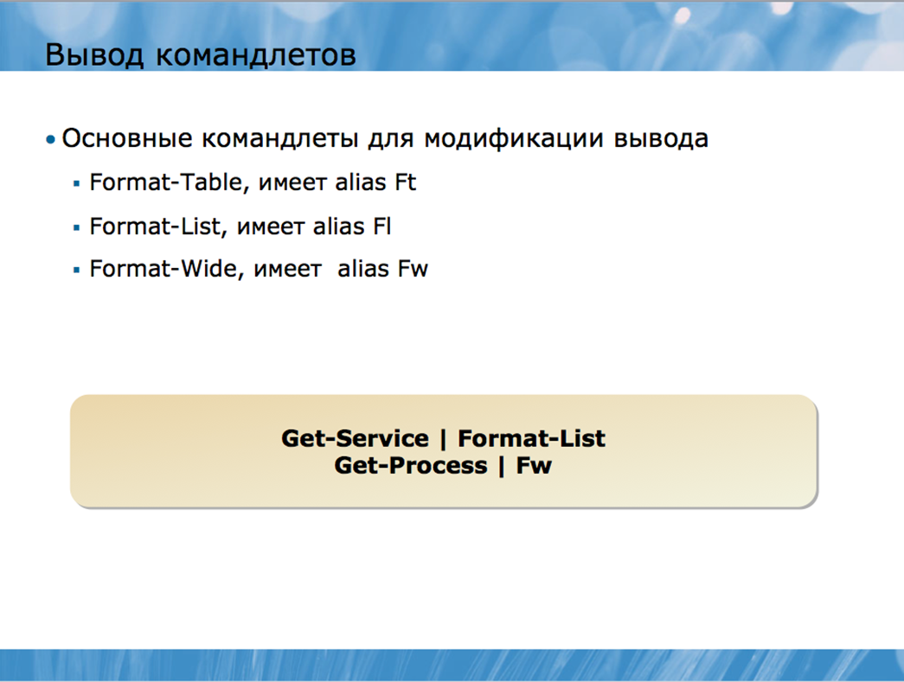
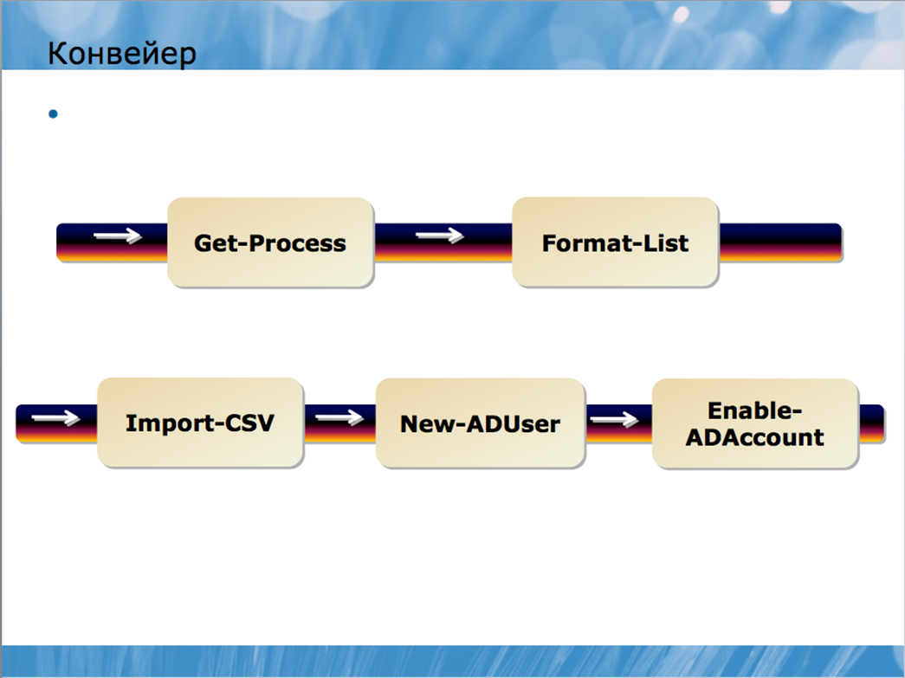
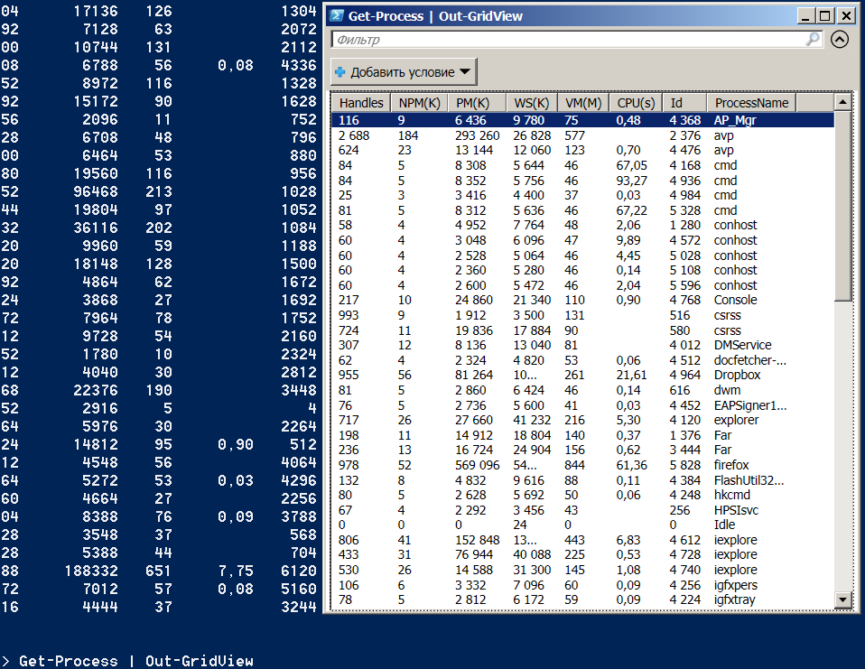
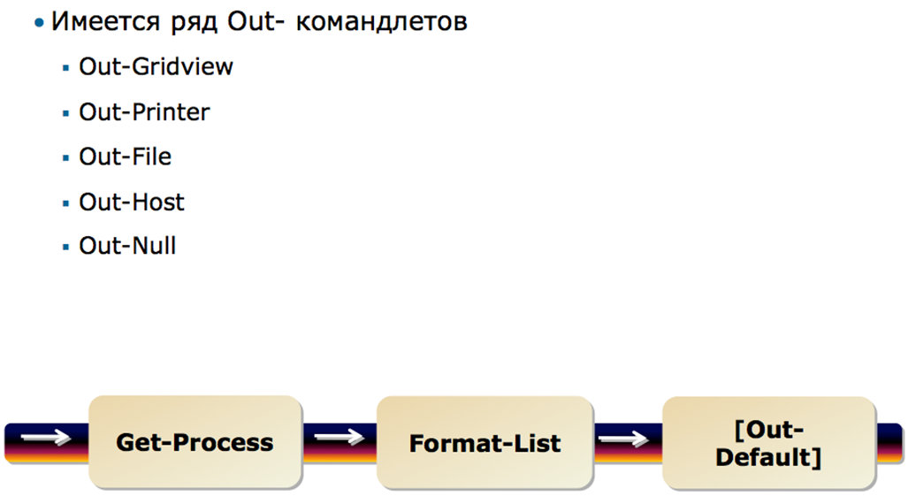
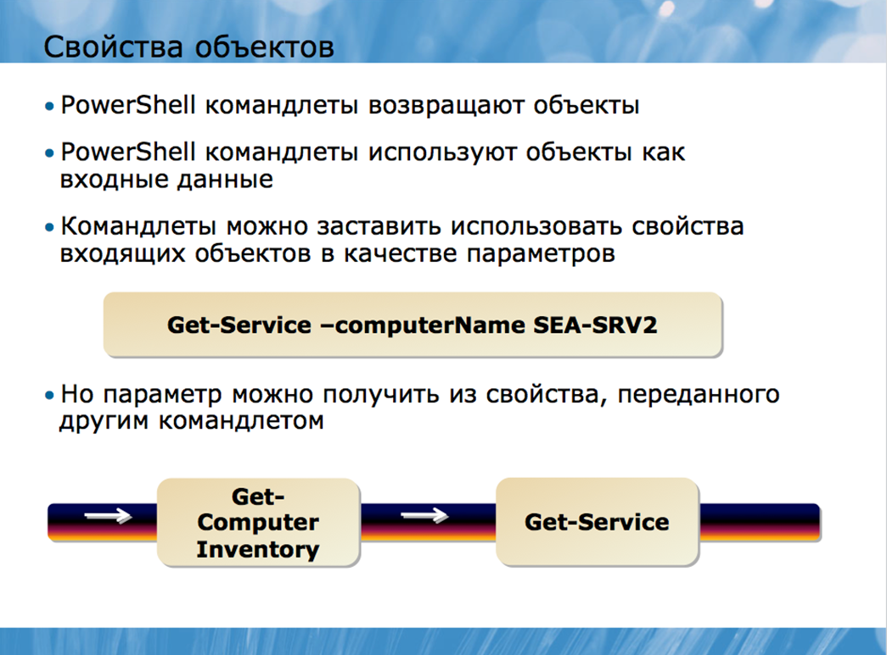

Акт передачи выходных данных одного командлета во входные данные другого командлета называется конвейеризацией. Возможно, в других оболочках вам уже приходилось использовать конвейер. Например, это стандартная команда в Cmd.exe:
Dir | More
Здесь выходные данные команды Dir перенаправляются во входные данные команды More, которая создает постраничное отображение выходных данных.
Конвейер нашел широкое применение в Windows PowerShell. Весьма распространенным явлением здесь является строка из полдюжины командлетов, связанных между собой конвейером. Данные переходят из одного командлета в другой, при этом они постепенно уточняются, детализируются и превращаются именно в ту информацию, которая вам требуется.
Командлеты в Windows PowerShell ориентированы на такой способ работы в большей степени, чем команды в любой традиционной оболочке Windows или Unix. Конвейер позволяет выполнять очень сложные и мощные задачи без необходимости написания длиннейших скриптов и программ. Конвейеризация является настолько мощной и важной концепцией, что следующий раздел курса будет полностью посвящен ей.
Все команды в рамках Shell выполняются в виде конвейера. Чтобы лучше понять принцип действия такого конвейера, представьте трубу, по которой течет поток информации. Каждый командлет – это насосная станция, а труба соединяет каждую станцию с последующей. Каждая станция забирает информацию из трубы и добавляет туда новые данные, после чего видоизмененный поток движется к следующей станции.

Команды выполняются в одностороннем порядке – слева направо, а знак (“|”) является разграничителем между командлетами. Вы уже видели такие примеры, скажем, этот:
Get-Process | Format-List
Это простейший пример использования конвейера. В действительности с его помощью можно создавать значительно более сложные и мощные команды. Например, чуть позже вы узнаете, как написать командную строку вроде этой:
Import-CSV c:\new_users.csv | New-ADUser –passThru | Enable-ADAccount
Эта простая трехкомпонентная командная строка позволяет создать сотни новых пользователей Active Directory и активировать их аккаунты. При старых административных технологиях выполнение этой задачи могло потребовать десятки строк на скриптовом языке программирования; с командлетами и конвейером Windows PowerShell данная задача выполняется исключительно с помощью синтаксиса, который вы только что видели (конечно, если были выполнены некоторые предварительные условия, о которых вы узнаете чуть позже).

Windows PowerShell – это, конечно, не первая оболочка, в которой используется технология конвейера. В оболочках Unix уже давным-давно информация от команды к команде передается по конвейеру, да и в Windows (в частности, в Cmd.exe) используется нечто подобное. Проблема же с этими старыми оболочками заключалась в том, что они передавали от одной команды к другой не что иное, как текст. Например, представьте себе, что команда под названием Plist передает текстовое описание текущего процесса, которое выглядит приблизительно так:
Pid Name Image
--- ------------------------- -------------
092 Notepad notepad.exe
098 Windows Paint mspaint.exe
112 Calculator calc.exe
164 Windows PowerShell powersehll.exe
Предположим, вашей целью является завершить работу всех копий Windows Notepad. У вас есть команда под названием Kill, которая принимает ID (PID) процесса и завершает этот процесс. Но вы не можете просто запустить команду:
Plist | Kill
Для начала вы должны определить, какая строка выходных данных Plist относится к Notepad; затем вам нужно сократить эту строку до PID, который требуется команде Kill. В Unix все это осуществляется с использованием утилит, анализирующих текст, таких как Sed, Grep, и Awk. Например, обычной для Unix является такая команда:
ps auxwww | grep httpd
Проблема при таком подходе состоит в том, что вам приходится тратить больше времени на анализ и модификацию текста, нежели на выполнение самой задачи. Скриптовые языки вроде Perl приобрели популярность исключительно из-за их мощных возможностей анализа текста. Администраторы, использующие такие оболочки, должны быть экспертами в области анализа текста, хотя технически эти манипуляции не имеют ничего общего с административными задачами.
Windows PowerShell позволяет отказаться от текстовых выходных данных в пользу другой их формы. Командлет Windows PowerShell всегда производит элементы, которые представляют собой компоненты операционной системы вместо текста.
Что же это за элементы? По сути элемент – это самостоятельная структура данных, которая описывает часть функционирования операционной системы или серверной технологии. Процесс, например, является частью функционирования операционной системы. Сервис – это часть операционной системы. Файл или папка – часть операционной системы. Пользовательский аккаунт – это элемент операционной системы, точно так же, как и группа, организационная единица или сам домен. Вы можете воспринимать элемент как разновидность структурной единицы, с которой Windows PowerShell работает очень легко и быстро. Вместо того, чтобы давать оболочке команду «пропустить 10 символов в каждом ряду, чтобы найти колонку, которая содержит название процесса», вы можете просто дать ей задание обратиться к атрибуту Name, поскольку структура, используемая в конвейере, создана таким образом, что атрибуты становятся легкодоступными.
Windows PowerShell использует терминологию, которая иногда кажется тесно связанной с разработкой программного обеспечения. Помните, что это всего лишь слова, и их употребление не означает, что вам придется стать программистом, чтобы начать пользоваться Windows PowerShell. Например, в предыдущем разделе вы видели, что слово «элемент» используется для обозначения того, что командлет отправляет по конвейеру. Например, командлет Get-Process помещает элементы процесса в конвейер. Более официальным термином здесь будет слово «объект», т.е. вы можете сказать, что командлет Get-Process помещает объекты процесса в конвейер.
Эти объекты имеют атрибуты. Для процесса атрибутами могут быть имя, ID, объем занимаемой памяти и.т.д. Формальным названием атрибута будет термин «свойство». Другими словами, вы можете сказать, что объект процесса обладает свойством имени, свойством ID, и.т.д.
Объекты обычно имеют более одного свойства, каждое из которых описывает тот или иной атрибут объекта. Другие оболочки могут отображать эти атрибуты в форме списка или таблицы. Например, объект процесса можно отобразить в виде такого текста:
Pid Name Image
--- ------------------------- -------------
092 Notepad notepad.exe
098 Windows Paint mspaint.exe
112 Calculator calc.exe
164 Windows PowerShell powershell.exe
Однако, как вы уже знаете, совершение различных манипуляций с текстом занимает слишком много времени. Структура данных объекта, в свою очередь, во многом упрощает доступ как к одному свойству объекта, так и ко всему набору его свойств. В рамках данного курса мы будем употреблять термин «свойство» наряду с термином «атрибут», чтобы время от времени напоминать читателям, что название – это не главное. Намного важнее – понять, что Windows PowerShell обеспечивает простой и быстрый доступ к данной информации через конвейер.
Поскольку свойства стали доступными без необходимости текстово-синтаксического анализа, они стали обеспечивать более быстрый и простой доступ к определенным частям информации. Командлеты Windows PowerShell производят объекты, а также могут принимать объекты как входящие данные. Конкретные параметры командлетов могут создаваться для поиска конкретных свойств входящих объектов, а если эти свойства найдены, командлет может использовать данную информацию в качестве входящих данных параметра.
Например, представьте, что командлет Get-Service имеет параметр, который называется –computerName. Данный параметр будет уточнять имя удаленного компьютера, с которого вы хотите получить службы:
Get-Service –computerName SEA-SRV2
Данный параметр также может быть создан разработчиком командлета для поиска свойства «Имя компьютера» у входящего объекта. Предположим, у вас есть командлет под названием Get-ComputerInventory, который извлекает список компьютеров из конфигурационной базы данных. Каждый компьютер в базе данных будет выступать в качестве объекта, а каждый объект может иметь несколько свойств, включая свойство «Имя компьютера» (ComputerName). В данном случае для извлечения служб из всех обслуживаемых компьютеров можно запустить следующую команду:
Get-ComputerInventory | Get-Service
Нет нужды отображать инвентаризационную информацию в виде текстовой таблицы, подвергать анализу колонку «Computer Name», и.т.д., так как вы работаете не с текстом. Windows PowerShell передает объекты по конвейеру от одного командлета к другому и устанавливает связь между свойствами объекта и параметрами второго командлета.
В действительности командлета Get-ComputerInventory, встроенного в Windows PowerShell нет, но командлет Get-Service функционирует именно так, как было описано. Вы увидите примеры его использования чуть позже.
Другим исследовательским командлетом PowerShell является командлет Get-Member. Если вы поместите объект в конвейер к нему, то получите список членов класса объекта, который будет включать все свойства объекта. Например
Get-EventLog Security –newest 10 | Get-Member
Вы также можете поместить объект в конвейер к командлету Format-List * для просмотра списка объектов, который будет включать все свойства объекта.
Get-Process | Format-List *
Другим хорошим путем является использование Get-Member вместе с командлетом Out-GridView
Get-Process | Out-GridView
В ответ будет выдано окно с просмотрщиком табличных данных

Помимо командлета Out-GridView, с которым вы только что познакомились, оболочка предлагает еще несколько командлетов Out-. Каждый из них предназначен для перенаправления выходных данных в конкретное место:
· Out-Printer
· Out-File
· Out-Host
Out-Host перенаправляет данные в окно консоли, что является действием по умолчанию, о котором вы уже слышали.
Out-File – исключительно полезный командлет; при указании имени файла он перенаправляет данные непосредственно в этот файл. При этом объект не форматируется, а значит, предварительно следует использовать один из форматирующих командлетов:
Get-EventLog Application –newest 100 | Format-List * | Out-File events.txt
Не забывайте обращаться к справочной информации! Out-File, например, может иметь множество параметров, которые позволяют уточнить кодировку символов, желаемое количество знаков в каждой строке выходного текстового файла, и.т.д.

Out-Null – еще одна опция, имеющая специальное предназначение. Иногда командлеты превращают объекты не в то, что вам нужно. Чтобы отменить данные изменения, используется командлет Out-Null:
Get-Service | Out-Null
Вы также можете использовать старый синтаксис > и >> для перенаправления объекта в файл. В данном случае командлет Out- File используется скрыто, что упрощает отправку данных в текстовый файл, хотя при этом вы лишаетесь возможности применить дополнительные параметры Out- File:
Get-Process > procs.txt
На заметку: Если вы не знакомы с данным синтаксисом, запомните, что > отправляет объект в новый файл, заменяя любой существующий файл с таким же названием (Out-File ведет себя точно так же по умолчанию), а >> добавляет объект в конец существующего объекта (так же, как это делает параметр –append командлета Out-File).
Windows PowerShell передает объекты по конвейеру до его конца. На конце конвейера оставшиеся объекты передаются в специальный командлет, который называется Out-Default. Его не нужно прописывать вручную, поскольку он уже встроен в конвейер. Его работа заключается в том, чтобы принять получившиеся объекты и передать их на консольный командлет Out-Host, который отображает выходные данные на экране в текстовом виде. Поскольку объекты не конвертируются в текст до конца конвейера, вы имеете доступ к их свойствам до самого конца. Это означает возможность создавать сложные команды без необходимости текстового анализа.
Это общее правило имеет два исключения:
· Командлеты Format- производят объекты, но эти объекты являются крайне специфическими – их «понимают» только командлеты Out-. Это означает, что Format- командлет должен быть либо последним в конвейере, либо предпоследним (перед командлетом Out-).
· Большинство командлетов Out- не производят никаких объектов; они лишь отправляют объекты (например, текст) на какое-либо устройство (файл, принтер или окно консоли). Поэтому, командлеты Out- следует располагать в конце конвейера.

Во многом мощь и гибкость Windows PowerShell связаны с возможностью передавать объекты от одного командлета к другому по конвейеру. Поскольку эти командные строки – даже очень длинные – представляют собой всего одну логическую цепочку текста внутри оболочки, их часто называют однолинейниками (one-liners). В большинстве случаев один такой однолинейник может выполнить те же самые задачи, для решения которых потребовалось бы множество строк, написанных на скриптовом языке в рамках любой их старых технологий, например, Visual Basic Scripting Edition (VBScript). Например, этот однолинейник с использованием техник, которые мы рассмотрим позже, объединяет все имена компьютеров, перечисленных в c:\computers.txt и даже создает отчет о размере журнала регистрации событий:
Get-Content c:\computers.txt | where {($_.Trim()).length -gt 0} | foreach {
Get-WmiObject Win32_NTEventLogFile -computer $_.Trim() `
-filter "NumberOfRecords > 0" | Select-Object `
@{Name="Computername";Expression={$_.CSName}},LogFileName,NumberOfRecords,`
@{Name="Size(KB)";Expression={$_.FileSize/1kb}},`
@{Name="MaxSize(KB)";Expression={($_.MaxFileSize/1KB) -as [int]}}, `
@{name="PercentUsed";Expression={"{0:P2}" -f ($_.filesize/$_.maxFileSize)}}
} | Sort Computername | Format-Table -GroupBy Computername `
-property LogFileName,NumberOfRecords,*Size*,PercentUsed
Конечно, это сложная команда, но она прекрасно иллюстрирует мощь и гибкость конвейера.
Когда вы начнете работать с Windows PowerShell, основной причиной ошибок и затруднений могут стать ваши предположения об именах свойств или значений, которые они содержат. Например, если вы предположите, что существует свойство с именем DriveLetter, тогда как в действительности его имя – DeviceID, вы можете потерять несколько минут на выяснение этого факта. Создание однолинейника или скрипта, в котором предполагается значение FixedDisk для свойства DriveType, может повлечь проблемы, если на самом деле это свойство имеет значение «3».
Вывод из всего этого заключается в том, что никогда не надо строить предположения. Всегда используйте Get-Member, чтобы уточнить имя свойства, и перенаправляйте объекты в Format-List *, чтобы уточнить содержание этих свойств. Проверка займет совсем не много времени и позволит вам избежать ошибок и сэкономить время.